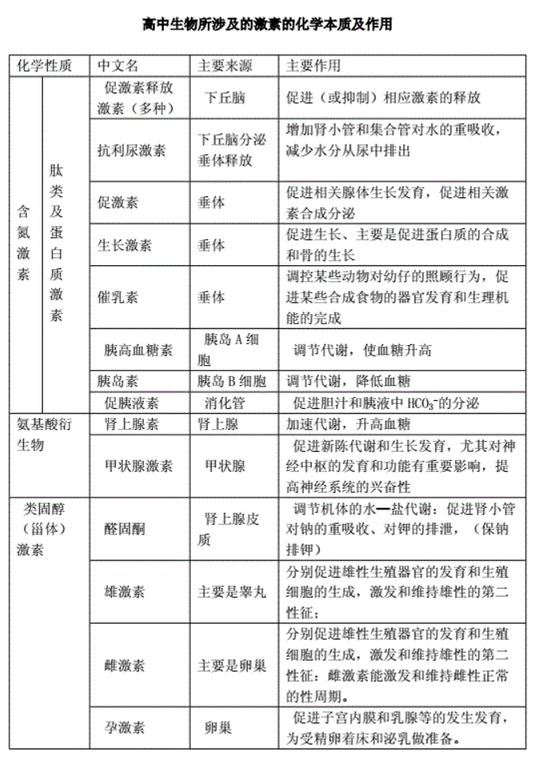

生物知识点汇总
呼吸与光合
成熟红细胞吸收血糖的方式是协助扩散。
有氧呼吸不一定非要线粒体，如原核生物有氧呼吸。
成熟红细胞只能进行无氧呼吸吗？
正确，没有线粒体，只能进行无氧呼吸。
产生乳酸的无氧呼吸产生二氧化碳吗？
不产生。
无氧呼吸什么时候产生二氧化碳？
产生酒精与二氧化碳时。
硝化细菌分解为并在氧化还原过程中释放能量。
原核细胞可以有氧呼吸吗？
可以。有相关酶。
光合作用光反应需要酶吗？
需要。
光合作用中，光反应场所是叶绿体类囊体薄膜。
判断：线粒体内膜向内折叠形成嵴可增加分解葡萄糖的酶的数量。
错误，线粒体内膜不含分解葡萄糖的酶，葡萄糖在细胞质基质分解。
绿叶中色素的提取和分离中，纸层析的结果显示哪两种色素的溶解度差异最大？
胡萝卜素和叶绿素 b.
判断：光合作用和细胞呼吸都能产生还原氢，且化学本质相同。
错误，化学本质不同。NADPH 和 NADH
暗反应中哪一步需要消耗能量？
还原，即 还原为 时。
NADPH 的中文名称是？
还原型辅酶 II
NADPH 是什么反应产生的？
光合作用中的光反应。
NADH 是什么反应产生的？
呼吸作用。
光合作用产生的还原氢具体是什么？
NADPH
呼吸作用产生的还原氢具体是什么？
NADH
NADH 的中文名称是？
还原型辅酶 I
还原型辅酶 I 简称？
NADH
还原型辅酶 II 简称？
NADPH
判断：无氧呼吸产生少量 ATP，因为大部分能量以热能形式散失。
错误，大部分能量仍保留在有机物中。
遗传变异
三倍体西瓜的无籽是可遗传变异吗？
是。通过染色体变异原理培育而成，是可遗传的变异。
可以通过组织培养进行无性繁殖。
细胞核属于细胞器吗？
不属于。
判断：沃森和克里克建立 DNA 双螺旋模型后，立即提出了 DNA 半保留复制的设想。
正确。
判断：胰腺分泌的促胰液素是人们发现的第一种激素。
错误，是小肠粘膜分泌的。
镰刀型细胞贫血症是由于控制血红蛋白基因中发生碱基对的替换。
囊性纤维病是由于碱基对的缺失造成的。
离体哺乳动物细胞的酶活性会随温度改变吗？
会。个体有维持体温恒定的功能，但离体细胞不能维持温度恒定。
产生分泌蛋白过程中，内质网膜面积减小，高尔基体面积先增大后减小最终不变，细胞膜面积增大。
判断：受精卵中遗传物质一半来自父方，一半来自母方。
错误，核遗传物质才是。
判断：高龄产妇生育的子女患某些遗传病概率更大。
正确。
判断：人类基因组计划只需要测定 23 条染色体的 DNA 序列。
错误，24 条，包括 X Y.
判断：选取豌豆作为实验材料的优点之一是可以免去人工授粉的麻烦。
错误。
需要人工授粉，优点之一是豌豆花大，人工异花授粉方便。
判断： 测交子代表现型和比例能反映出其产生的配子的种类及比例。
正确。
基因自由组合定律的实质是？
非同源染色体上的非等位基因自由组合。
判断：细胞分化有利于提高各种生理功能的效率。
正确。
判断：干细胞不断增殖分化，所以比组织细胞更容易衰老。
错误，干细胞不断分化，说明其本身分化程度低，不容易衰老。
在噬菌体浸染细菌实验中， 标记的是什么？
蛋白质外壳。
在噬菌体浸染细菌实验中， 标记的是什么？
噬菌体的 DNA
在噬菌体浸染细菌实验中，上清液中是什么？
蛋白质外壳。
在噬菌体浸染细菌实验中，沉淀物是什么？
细菌和噬菌体的 DNA
判断：噬菌体浸染细菌后，子代噬菌体外壳蛋白由细菌的基因编码。
错误，由噬菌体 DNA 编码。
噬菌体浸染细菌实验中，用 标记噬菌体，最终上清液放射性较高，可能原因？
保温时间过长，细菌裂解释放子代噬菌体。
判断：一个环状 DNA 中无游离的磷酸基团。
正确。
新物种形成的标志？
生殖隔离。
判断：现代生物进化理论以自然选择学说为核心。
正确。
判断：可遗传变异为生物进化提供原材料，不能决定生物进化的方向。
正确。
判断：染色体结构变异和染色体数目变异都能在光学显微镜下观察到。
正确。
质壁分离
成熟植物细胞放置于某溶液中，先发生质壁分离，后质壁分离自动复原，可能的原因？ 外部溶质进入细胞，使细胞内渗透压上升，外部水进入细胞的速率大于细胞中水到外界的速率，导致细胞吸水，质壁分离后自动复原。
什么细胞可以发生质壁分离？
有细胞壁和原生质层的成熟植物细胞。
判断：有细胞壁的植物细胞都能质壁分离。
错误，必须有中央大液泡和细胞壁、原生质层。
hei zao判断：用黑藻叶片观察细胞质壁分离时，叶绿体的存在有利于观察实验现象。
正确。
黑藻叶片叶肉细胞中液泡无色，叶绿体存在使原生质层显绿色，便于观察。
分裂与分化
动物具有发育成完整新个体潜能的体细胞。#生物/细胞/细胞全能性#
细胞分化的前途在胚胎发育的早期就已确定，不能逆转。
| 动物 | 植物 | |
|---|---|---|
| 间期 | 分裂间期中心体复制 | 无中心体 |
| 前期 | 由中心体发出星射线 | 细胞两极发出纺锤丝 |
| 末期 | 细胞膜向内凹陷使细胞缢裂 | 赤道板出现细胞板扩展形成细胞壁 |
神经与内环境
内环境稳态指内环境的每一种成分和理化性质都处于动态平衡中。
判断：胰高血糖素能促进食物中糖类的消化与吸收，从而使血糖含量升高。
错误。
不能促进食物消化吸收。
TRH 全称？
促甲状腺激素释放激素。
神经-体液-免疫调节网络是机体维持稳态的主要调节机制。
细胞代谢的主要场所？
细胞质。
过敏反应是免疫系统的防卫功能异常所致。
肾上腺皮质激素增加，促肾上腺皮质激素释放激素如何变化？
减少。
判断：体温恒定时，散热量一定接近产热量。
正确。
判断：运动员的大脑皮层也可参与机体的水盐平衡调节。
正确。
判断：在特定情况下，突触释放的神经递质，也能使肌肉收缩和某些腺体分泌。
正确。
判断：运动员可通过神经-体液调节来维持血糖的相对稳定。
正确。
机体需要通过源源不断产生激素来维持正常生命活动，原因是？
激素与靶细胞特异性结合，发挥作用后被灭活。
发烧时采用加盖棉被，会导致散热渠道不畅，体温上升。
人们发现的第一种激素是小肠粘膜分泌的促胰液素。
神经系统不可能直接控制血细胞、淋巴细胞。
静息电位： 离子外流形成外正内负的电位。
动作电位： 离子内流形成外负内正的电位。
动作电位具有不衰减性，在传递过程中峰值不变。
胰液通过导管释放，不会到血液中。
胰高血糖素作用于骨骼肌时，肌糖原分解产生的葡萄糖不会到达血液中。
一次性摄入糖过多，会使葡萄糖随尿液排出体外，同时带走大量水分，尿量增加。
组织水肿的原因： 发生局部炎症，增大毛细血管通透性，部分血浆蛋白进入组织液，组织液渗透压增高，发生组织水肿。#TODO#
淋巴由左右锁骨下静脉回流到血浆中。
血浆渗透压增高使下丘脑渗透压感受器兴奋。
神经调节的基本方式是反射，完成反射的结构基础是反射弧。
兴奋是以电信号的形式沿着神经纤维传导的，这种电信号也叫神经冲动。
一切感觉都发生在大脑皮层。
抗利尿激素促进肾小管和集合管对水的重吸收。
脊髓粗大端是传出神经。粗出
胰岛 A 细胞产生胰高血糖素，胰岛 B 细胞产生胰岛素。（记忆方法：A 先产生，B 后控制。）
甲状腺激素促进发育。
判断：激素、抗体和酶都具有特异性，只能参与特定靶细胞的代谢反应。
错误，后半句错误，酶能催化一种或一类特定的化学反应。
看物体时，在视网膜上形成物象，在大脑皮层的视觉中枢形成视觉。
呆小症是幼年缺乏甲状腺激素导致的。
内环境稳态是神经调节和体液调节共同作用的维持机制是由美国生理学家坎农提出的。
系统性红斑狼疮是由于免疫系统过于敏感、反应过度，将自身物质当作外来异物进行攻击造成的自身免疫病。
皮肤荨麻疹、鼻炎是由于免疫系统过度敏感引起的过敏反应。
肾上腺髓质分泌肾上腺素，受内脏神经的直接支配，不存在分级调节。
肾小球滤过率降低会导致内环境水盐含量上升。
毛细血管通透性改变，不一定导致组织细胞内液渗透压上升。
抗利尿激素在下丘脑分泌，在垂体释放。
肥胖引发肌肉组织减少可能会导致尿糖吗？
可能会，组织细胞摄取糖减少，血糖增高，超过重吸收阈值则出现尿糖。
多肽及蛋白质：促激素释放激素，促激素，抗利尿激素，生长激素，催乳素，胰岛素，胰高血糖素，促胰液素。
氨基酸衍生物：肾上腺素，甲状腺激素
类固醇激素：醛固酮，雄激素，雌激素，孕激素。（性激素）

| 化学本质 | 名称 | 主要来源 | 作用 |
|---|---|---|---|
| 肽类及蛋白质激素 | 促激素释放激素 | 下丘脑 | 促进或抑制相应激素的释放 |
| 肽类及蛋白质激素 | 抗利尿激素 | 下丘脑分泌 垂体释放 |
增加肾小管和集合管对水的重吸收，减少水分从尿中排出 |
| 肽类及蛋白质激素 | 促激素 | 垂体 | 促进相关腺体生长发育，促进相关激素合成分泌 |
| 肽类及蛋白质激素 | 生长激素 | 垂体 | 促进生长，主要是促进蛋白质合成与骨的生长 |
| 肽类及蛋白质激素 | 胰高血糖素 | 胰岛 A 细胞 | 促进肝糖原分解和非糖物质转化为葡萄糖，升高血糖 |
| 肽类及蛋白质激素 | 胰岛素 | 胰岛 B 细胞 | 促进组织细胞加速摄取、利用和储存葡萄糖，从而使血糖水平降低 |
| 肽类及蛋白质激素 | 促胰液素 | 消化管 | 促进胆汁和胰液中 的分泌 |
| 氨基酸衍生物 | 肾上腺素 | 肾上腺 | 加速代谢，升高血糖 |
| 氨基酸衍生物 | 甲状腺激素 | 甲状腺 | 促进新陈代谢与生长发育，对神经中枢发育和功能有重要影响，提高神经中枢兴奋性 |
| 类固醇 | 醛固酮 | 肾上腺皮质 | 调节机体水盐代谢，促进肾小管对钠的重吸收，对钾的排泄，保钠排钾。 |
| 类固醇 | 雄激素 | 睾丸 | 促进雄性生殖器官发育，生殖细胞形成，激发和维持雄性第二性征。 |
| 类固醇 | 雌激素 | 卵巢 | 促进雌性生殖器官发育，生殖细胞形成，激发和维持雌性第二性征，激发和维持雌性正常的性周期 |
| 类固醇 | 孕激素 | 卵巢 | 促进子宫内膜和乳腺等的生长发育，为受精卵着床和泌乳做准备 |
血液中缺碘时，甲状腺激素浓度降低，引起下丘脑分泌促甲状腺激素释放激素增加，导致甲状腺补偿性肿大。
突触的结构包括突触前膜、突触间隙和突触后膜。
判断： 通过体液传递方式对生命活动进行调节也是体液调节。
属于调节因子，通过体液传递的方式对生命活动进行调节属于体液调节。
免疫系统三大功能：防卫、监视和清除。
心态好的人一般不容易得癌症，体现了免疫系统的监视和清除功能。
免疫器官包括：
-
中枢免疫器官，胸腺，骨髓，是免疫细胞发生、分化和成熟的场所。
-
外周免疫器官，脾，淋巴结，粘膜相关淋巴组织等，是成熟 T 细胞和 B 细胞定居的场所。
T 淋巴细胞成熟的场所：胸腺。
B 淋巴细胞成熟的场所：骨髓。
浆细胞的特点：产生单一抗体，无法分裂，寿命短。
-
人体内环境酸碱平衡的三大调节机制
-
化学缓冲液：迅速与过剩的酸或碱结合。
-
呼吸系统：通气不足或过度通气来保留或排出体内的酸。
-
肾脏：重吸收酸和碱或通过尿液排泄酸和碱。
人体内环境酸碱平衡的方式：
-
与 等缓冲对对血液酸碱度起缓冲作用。
-
通过呼吸系统可不断排出二氧化碳。
-
血浆中过多的碳酸氢盐可以由肾脏随尿排出体外。
-
神经系统对呼吸运动强度的调节有利于维持血液 pH 相对稳定。
判断：食物中的碱性物质与新陈代谢产生的酸性物质所构成的缓冲对调节了血液 pH
错误，缓冲对是存在血浆中的，不是食物的。
缓冲对是什么？
保持酸碱平衡的物质。
缓冲溶液一般由具有足够浓度及适当比例的共轭酸碱对组成。组成缓冲溶液的共轭酸碱对的两种物质合称为缓冲对。
判断：严重腹泻后，只需要补充水分就能维持细胞外液正常的渗透压。
错误，需要补充水分和盐分才能维持。
判断：刺激支配肌肉的神经，引起肌肉收缩的过程叫做反射。
错误，反射必须有完整的反射弧结构，必须有感受器。
在寒冷环境中，能促使人体代谢产热的激素主要是甲状腺激素和肾上腺素。
判断：若电激刺激强度增大，则动作电位的峰值也会变大。
错误，神经纤维膜上动作电位峰值和刺激无关。
判断：吞噬细胞对细胞集团的吞噬消化属于非特异性免疫。
错误，细胞集团的产生需要体液免疫，不完全属于非特异性免疫。
什么是细胞集团？
抗原和抗体结合后形成沉淀与细胞集团，进而被吞噬细菌消化。
组织胺如何引起组织水肿？
增强毛细血管壁通透性，组织液渗透压增高引起组织水肿。
记忆细胞可以产生抗体吗？
不能。
免疫活性物质是指淋巴因子、抗体、溶菌酶这些由免疫细胞或其它细胞产生的发挥免疫作用的物质。
免疫活性物质举例：抗体、淋巴因子、溶菌酶。
免疫活性物质一定由免疫细胞产生吗？
不一定，其他细胞也可以产生。
两次接种疫苗时，接种间隔时间过短，第二次产生抗体少，原因？
疫苗中的抗原与初次免疫后留存的抗体结合后被迅速清除。
植物激素
赤霉素促进植物茎干伸长，引起水稻疯长，减少产量。
双子叶植物比单子叶植物对 2,4-D 更敏感，可以用适宜浓度的 2,4-D 除去双子叶杂草。
生长啤酒时，用赤霉素处理大麦，使种子无需发芽就能产生 a-淀粉酶，从而简化工艺、降低成本。
细胞分裂素能促进细胞分裂，延缓植物器官衰老，用于农产品保鲜。
生长素可以由色氨酸在酶的催化下生成。
敏感程度：根 > 芽 > 茎
ABA(脱落酸)合成部位是根冠和萎蔫的叶片。
生长素浓度升高促使组织中乙烯的合成，乙烯的浓度增高反过来抑制生长素的合成。
生长素的化学成分是吲哚乙酸，简称 IAA.
植物激素定义：植物自身产生的、运往其他部位后能调节植物生长发育的微量有机物质称为植物激素。
植物激素六大类：生长素、赤霉素、细胞分裂素、脱落酸、乙烯和油菜素甾醇。
人工合成的类似植物激素的物质叫做生长调节剂。
判断：光照使生长素分布不均匀会发生在果实中吗？
不会，主要发生在茎部。
判断：光照、温度等环境因子的改变会引起包括植物激素和成在内的多种变化，不会对基因组表达进行调节。
错误，会对基因组表达进行调节。
判断：植物激素对植物的生长、发育和繁殖的调节都具有两重性。
错误，生长素有，其他无。
判断：光照、温度等环境变化可引起植物体内各种激素合成的改变。
正确。
判断：植物激素合成受基因调控，激素又能对基因组表达进行调节。
正确。
种群群落生态系统
为获取最大日捕捞量，应该在略大于 时捕捞，使捕捞后为为 .
判断：能量流动促进了生态系统的物质循环。
正确。
取样器取样法中，采集的小动物可以放入体积 70% 酒精溶液中，也可以放入试管中。
探究培养液中酵母菌种群数量的变化实验：
注意事项：
进行计数前，将试管摇匀，目的是使酵母菌在培养液中混合均匀，减少计数误差。
若一个小方格内酵母菌过多，难以数清时，可将培养液稀释一定倍数后再计数。
加样品方法：
在清洁干燥的血球计数板上盖上盖玻片，再用无菌细口滴管将稀释的酵母菌液由盖玻片边缘滴入一小滴（将计数室充满即可），多余的培养液用滤纸吸去，稍待片刻，待酵母菌细胞全部沉降到计数室底部后，开始计数。
计数方法：
取左上边和左上角。
血球计数板计数时，若先滴加，再盖盖玻片，会由于多余培养液中酵母菌沉降而使实验结果偏大。
血球计数板不能用试管刷擦洗，应浸泡和冲洗后晾干。
丰富度是指群落中物种数目的多少。
生态系统中，分解者的作用：将动植物遗体残骸中的有机物最终分解成无机物。
引进生物进入生态系统，能增加营养结构的复杂性，进而加快生态系统中能量流动、物质转化的速率。
大自然中，猎物通过快速奔跑逃脱捕食，捕食者通过更快速的奔跑获得食物，猎物和捕食者的变化会促进对方改变，这种现象称为协同进化。
输入生态系统的总能量是生产者合成的有机物的能量总和。
生态系统中能量的初始来源有太阳能和氧化无机物时释放的化学能。(光合作用、化能合成)
当外界干扰因素强度超过一定限度时，生态系统会因为丧失自我调节能力而难以恢复。
任何生态系统都需要不断得到来自系统外的能量补充，以便维持生态系统的正常功能。
判断：生态系统信息传递可以发生在同一个个体间。
错误，生态系统信息传递必须发生在不同个体间。
四种鱼栖息于不同的水层，体现了群落空间结构的什么类型？
垂直结构。
垂直结构的分层现象是什么导致的？
栖息空间和食物条件。
自然水域中生物多种多样，它们能充分利用环境资源，适应水域环境，这是物种之间以及生物与环境之间共同进化的结果。
丰富度是指？
群落中物种数目的多少。
生态系统结构：
-
组成部分
-
非生物物质和能量
-
生产者
-
消费者
-
分解者
-
-
营养结构
-
食物链
-
食物网
-
判断：若人与自然和谐统一，农业生态系统中物质便可自我循环，但能量需要系统外提供。
错误。物质循环是对整个生物圈而言，农业生态系统中物质不可自我循环。
基因工程
判断：目的基因和受体细胞均可来自动植物或微生物。
正确。
由于基因表达载体上存在氨苄青霉素抗性基因，因此不能将其导入到用于食品生产的酵母菌中，原因是：表达产物进入人体后，抗生素对人体内病菌进行选择，增强细菌等耐药性。
人的基因之所以能移接到植物体内，其物质基础是：DNA 结构基本相同。
标记基因的作用是？鉴定和筛选导入目的基因的受体细胞。
导入重组质粒后，还需要进行的基因工程操作步骤是？
目的基因的检测与鉴定。
基因工程是在分子水平上进行设计和施工的。
基因工程的核心步骤？
目的基因表达载体的构建。
使大肠杆菌产生牛凝乳酶的目的基因最好从 cDNA 文库中获取，原因是？
大肠杆菌是原核生物，cDNA 文库中基因没有内含子，基因结构与原核细胞的基因结构更接近。
目的基因和质粒构建重组质粒，最好用两种产生不同黏性末端的限制酶切割，理由是？
防止目的基因或载体自身的黏性末端连接、防止目的基因与载体反向连接。
子链延伸方向为从 5' 到 3' 端。
基因是有遗传效应的 DNA 片段。
基因表达载体中，除目的基因外，还必须有启动子、终止子、复制原点、标记基因等。
启动子的作用是？
RNA 聚合酶识别和结合的位点，驱动基因转录。
将目的基因导入时，要穿过多层生物膜，将包裹在金属颗粒表面的表达载体轰击进入叶绿体，提高转化效率，该方法称为基因枪法。
使用 PCR 技术扩增目的基因时，需要加入两种引物，原因是：
DNA 聚合酶只能向 3' 端延伸，用两种引物才能确保 DNA 两条链同时被扩增。
结论：
| DNA 数 | 链数 | |
|---|---|---|
| 总数 | $2^n$ | $2 \times 2^n$ |
| 含有引物 | $2^n$ | $2 \times (2^n - 1)$ |
| 只含一种引物 | $2^n - 1$ | $2^n - 1$ |
| 同时含有两种引物 | $2^n -2$ | $0$ |
详细说明 PCR 扩增技术中，各种不同 DNA 单链的数量变化。
由于 DNA 复制可以对单链研究，此处仅研究单链。
定义 为最普通的 DNA 单链数量。
定义 为被一种引物截取的 DNA 单链数量。
定义 为被两种引物都截取的目的 DNA 单链数量。
研究一次复制中会发生什么。
一个 会得到两个 .
一个 会得到一个 与一个 .
一个 会得到两个 .
初始时， ，其余全为 $0$ .
在第一轮扩增中， ，其他全为 $0$ .
在第二轮扩增中， ，其他全为 $0$ .
第三轮扩增中， ，其他全为 $0$ .
可以发现： ， ， .
那么构造 ，有： ，初始值为 ，那么有： .
反解出 .
那么对于 时， .
对于 时， .
对于 时， .
如果求 DNA 单链数，则 .
如果求 DNA 分子数，则 .
重组载体进入细胞并在细胞内维持稳定和表达的过程叫做转化。
判断：逆转录获得的目的基因，可以用于基因工程和基因组测序吗？
不能，因为逆转录获得的基因没有内含子片段。
PCR 扩增技术中，引物的作用：使 DNA 聚合酶从特定位置结合开始连接脱氧核苷酸。
使用农杆菌转化法时，应该选择受伤的叶片，理由是：伤口处细胞分泌大量酚类物质，吸引农杆菌。
基因工程的含义：按照人们意愿进行严格设计，通过体外 DNA 重组和转基因技术，赋予生物新的遗传特性，创造出更符合人类需要的新生物类型和生物产品。
DNA 连接酶与限制酶都作用于磷酸二酯键。
非洲爪蟾核糖体蛋白基因与质粒重组后导入大肠杆菌细胞中进行表达，该研究除了证明质粒可以作为载体外，还证明了体外重组的质粒可以进入受体细胞；真核生物基因可在原核细胞中表达。
真核生物基因在大肠杆菌细胞内表达时，表达出的蛋白质可能被降解。为防止蛋白质被降解，在实验中应选用蛋白质酶缺陷的大肠杆菌作为受体细胞，在蛋白质纯化的过程中应添加蛋白酶。
判断：蛋白质工程只能改造现有的蛋白质而不能制造全新的蛋白质。
错误。
细胞工程
用于植物组织培养的植物材料称为外植体。
植物组织培养中，生产上用试管苗保存植物的优良性状，原因？
组织培养形成试管苗属于无性繁殖，后代不性状分离。
判断：动物细胞培养时要求培养瓶或培养皿内表面光滑。
正确。
将已除去细胞壁的植物细胞放入等渗溶液中，细胞是何形状？
圆球形。
生产出的单克隆抗体能否直接应用于人体？
不能，发生免疫排斥。
全能性高，分化程度一定低吗？
不一定，例如生殖细胞分化程度高，全能性也高。
动物细胞核移植的原理是动物细胞核的全能性。
哺乳动物核移植可以分为胚胎细胞核移植和体细胞核移植。
动物细胞培养时，为什么要将动物组织分散成单个细胞？
保证细胞所需营养供给，保证细胞内有害代谢物质排出。避免接触抑制。
为什么动物细胞培养时，要在培养基中加入血清、血浆等天然成分？
血清与血浆中含有多种维持细胞正常代谢和生长的物质，人们对细胞所需营养物质未完全搞清楚，所以需要加入。
判断：原代培养的细胞因具有最接近于体内细胞的生长特性，常用于药物测试研究。
正确。
培养脱毒马铃薯时，外植体应当选用茎尖，不选用叶片的理由是：病毒多、全能性低。
除了单克隆抗体外，再举一些应用动物细胞工程技术生产的生物制品：
干扰素、病毒疫苗。
动物细胞培养要经过脱分化的过程吗？为什么？
不需要，高度分化的动物细胞失去发育成完整个体的能力，无需脱分化过程。
植物组织培养与动物细胞培养的比较
| 比较项目 | 植物组织培养 | 动物细胞培养 |
|---|---|---|
| 生物学原理 | 植物细胞全能性 | 细胞增殖 |
| 培养基成分 | 蔗糖、氨基酸、水、矿物质、生长素、细胞分裂素、琼脂等 | 葡萄糖、氨基酸、促生长因子、无机盐、微量元素、水、血清、血浆等 |
| 培养结果 | 新的植株或组织 | 大量新细胞或细胞产物 |
| 应用 | 快速繁殖 培育无病毒植株 细胞产物的工厂化生产 制作人工种子 |
生产病毒疫苗、干扰素、单克隆抗体等 检测有毒物质 生理、病理、药理研究 |
| 培养条件 | 无菌、适宜的温度和 pH | 无菌、适宜的温度和 pH |
| 取材 | 植物器官、组织或细胞 | 动物早期胚胎、幼龄动物的器官或组织 |
| 培养对象 | 植物器官、组织或细胞 | 分散的单个细胞 |
| 过程 | 脱分化，再分化 | 原代培养、传代培养 |
| 细胞分裂生长分化的特点 | 分裂：形成愈伤组织 分化：形成根、芽 |
只分裂不分化 贴壁生长 接触抑制 |
可以将供体细胞直接注射入去核卵母细胞中吗？
可以，并且能减少对细胞核损伤，有利于重组细胞的分裂。
在动物细胞培养时，将细胞所需营养物质按其种类和所需数量严格配制而成的培养基称为合成培养基。
用于核移植的供体细胞，一般都选择培养十代以内的细胞，原因是：该种细胞保留正常的二倍体核型，遗传物质未发生改变，代谢旺盛、分裂能力强。
将进行培养的供体细胞注入去核的卵母细胞中，去除卵母细胞细胞核的目的是：使克隆出的动物个体的遗传物质几乎全部来自供体细胞。
动物细胞融合中，为什么用灭活的病毒作为诱导剂？
灭活的病毒能使细胞膜上蛋白质分子和脂质重新排布。
动物细胞融合中，灭活病毒的灭活含义是什么？
用紫外线等物理或化学手段处理，使病毒丧失感染活性，并不破坏抗原结构从而保留融合活性。
动物细胞融合中，融合处理后的细胞是否可以直接用于培养？为什么？
不能，还需要筛选。
因为诱导融合的手段只促进细胞融合，不保证所有细胞都发生融合，且形成的融合细胞也有多种，故需要筛选。
动物细胞完成融合的标志：动物细胞核融合。
动物细胞融合的主要用途是制备单克隆抗体。
动物细胞融合常用的诱导因素有聚乙二醇(PEG)，灭活病毒、电激等。
杂交瘤细胞由已免疫的 B 淋巴细胞和骨髓瘤细胞融合而成，由既能无限增殖又能产生特定抗体的特点。
单克隆抗体主要优点：特异性强、灵敏度高、能大量制备。
单克隆抗体主要用途：作为诊断试剂、用于治疗疾病和运载药物。
动物细胞融合也称细胞杂交，是指两个或多个动物细胞结合形成一个细胞的过程。
向小鼠注射特定的抗原蛋白，刺激机体产生免疫应答，从而产生相应的浆细胞和 B 淋巴细胞。
获得杂交瘤细胞过程中，筛选淘汰了未融合细胞、同种细胞融合产生的细胞。
植物细胞融合完成的标志：杂种细胞再生出细胞壁。
细胞壁成分主要是纤维素与果胶，因此去壁过程使用纤维素酶与果胶酶。
愈伤组织是由排列疏松的薄壁细胞组成的。
愈伤组织可以形成具有生根发芽能力的胚状结构。
诱导原生质体融合的方法：
物理：离心，振动，电激
化学：聚乙二醇(PEG)
不同植物细胞杂交融合，形成异源多倍体。
两个二倍体细胞融合为四倍体细胞。
愈伤组织再分化过程需要光照，因为叶肉细胞中叶绿素的合成需要光照。
筛选杂交瘤细胞得到能分泌特定抗体的杂交瘤细胞细胞时，使用抗原和抗体特异性结合的办法，称为抗体检测。
AB 植物直接有性杂交后代不可育，植物体细胞杂交后代可育，造成差异的一种可能原因：减数分裂过程中，前者染色体联会异常，后者染色体联会正常。
细胞具有全能性的原因：细胞中含有该种生物的全套遗传信息。
细胞不表现全能性的原因：基因的选择性表达。
花药离体培养一定得到单倍体植株。单倍体定义：只含一组染色体的细胞或生物体。绝大部分动、植物的配子为单倍体，配子未经结合而直接发育起来的生物也是单倍体。
什么是单倍体？只含一组染色体的细胞或生物体。绝大部分动、植物的配子为单倍体，配子未经结合而直接发育起来的生物也是单倍体。
动物核移植中，一般用传代十代以内的细胞作为核供体，因为保持正常的二倍体核型。
合成培养基中，不含血清、血浆，而是作为一种外来成分添加。
动物细胞培养的气体环境：$95% 的 .
动物细胞融合技术最广泛的应用是：单克隆抗体制备。
单克隆抗体最广泛的应用是：诊断试剂。
动物细胞融合中，使用的灭活病毒具体是仙台病毒。
杂交瘤技术进行二次筛选：
- 1.
筛选杂交瘤细胞
- 2.
筛选产生特定抗体的杂交瘤细胞
杂交瘤技术中，筛选产生特定抗体的杂交瘤细胞采用有限稀释法。
杂交瘤细胞在小鼠腹腔内培养的优点：腹腔环境无菌无毒，可反复抽出腹水获取抗体。
单倍体育种不一定获得纯合子，例如四倍体产生的配子有两组染色体组，不一定纯合。
植物体细胞杂交技术中，培育的新生物并未表现出两种生物的性状，原因是：基因之间互相影响，互相调控。
动物细胞工程
-
基础：动物细胞培养技术
-
技术手段：
-
动物细胞培养
-
概念：从动物机体中取出相关的组织，分散为单个细胞，在适宜的培养基中，让这些细胞生长和增殖。
-
原理：细胞增殖
-
培养过程：
-
动物胚胎或幼龄动物组织块剪碎后，用胰蛋白酶或胶原蛋白酶处理，获得单个细胞。
-
加培养液进行原代培养，细胞贴壁生长，接触抑制后分瓶进行传代培养。
-
-
培养条件：
-
无菌无毒的环境：进行无菌处理，培养液中添加抗生素，定期更换培养液，以便清除代谢产物。
-
营养：
-
无机物：无机盐、微量元素等
-
有机物：糖、氨基酸、促生长因子
-
天然成分：血清、血浆
-
-
温度和 pH 值：
-
温度：哺乳动物以 为宜
-
pH：多数细胞为
-
-
气体环境：氧气以供细胞代谢，二氧化碳以维持培养液的 pH
-
-
相关概念：
-
细胞贴壁：悬液中分散的细胞贴附在瓶壁上。
-
接触抑制：当贴壁细胞分裂生长到表面互相接触时，细胞停止分裂增殖的现象。
-
原代培养：指动物组织消化后的初次培养。
-
传代培养：贴壁细胞出现接触抑制后，需要重新用胰蛋白酶处理，分瓶培养，让细胞继续增值。
-
-
应用：
-
生产生物制品：病毒疫苗、干扰素、单克隆抗体
-
应用于生物工程：动物细胞是基因工程技术中常用的受体细胞
-
应用于检测有毒物质，判断某种物质毒性
-
用于生理、病理、药理等方面研究，如用于筛选抗癌药物
-
-
-
动物细胞核移植
-
概念：将动物的一个细胞的细胞核移入一个已经去掉细胞核的卵母细胞中，使其重组并发育成一个新的胚胎，最终发育成动物个体。
-
分类：
-
胚胎细胞核移植，较易成功
-
体细胞核移植
-
-
过程：
-
取供体体细胞进行细胞培养，获得供体细胞。
-
采集卵母细胞，培养至减数第二次分裂中期，去核。
-
将供体细胞注入去核卵母细胞中，进行细胞融合，获得重组细胞。
-
重组细胞发育为重组胚胎，胚胎移植到代孕动物中，最终得到克隆动物。
-
-
应用前景：
-
加速家畜遗传改良进程
-
增加濒危动物存活数量
-
生产珍贵的医用蛋白
-
用于组织器官的移植
-
-
存在问题：
-
成功率低
-
克隆动物健康问题
-
克隆动物食品安全性争议
-
-
-
动物细胞融合
-
概念：两个或多个动物细胞结合形成一个细胞的过程，也称细胞杂交。
-
原理：细胞膜的流动性
-
诱导融合方法：
-
物理、化学方法：与植物体细胞杂交相同，如聚乙二醇(PEG)、电激等。
-
生物方法：灭活的病毒
-
-
过程：
-
具有不同遗传信息的两个或多个细胞，通过诱导融合，形成杂交细胞。
- 1.
灭活病毒颗粒黏附于细胞表面
- 2.
细胞膜被病毒颗粒穿通
- 3.
细胞膜连接
- 4.
细胞核融合，形成杂交细胞
- 1.
-
-
结果：形成单核细胞，具有原来两个或多个细胞的遗传信息，可表现出两个或多个亲本的特点。
-
意义：
-
突破了有性杂交方法的局限，使远缘杂交成为可能。
-
成为研究细胞遗传、肿瘤和生物新品种培育等的手段。
-
利用动物细胞融合技术发展起来的杂交瘤技术，为制造单克隆抗体开辟了新途径。
-
-
-
生产单克隆抗体
-
传统抗体获得：
-
方法：向动物体内反复注射某种抗原，使动物产生抗体。从动物血清中分离所需抗体。
-
缺陷：产量低，纯度低，特异性差。
-
-
制备原理：
-
B 淋巴细胞特点：一种 B 淋巴细胞只产生一种特异性抗体，不能在体外无限增殖。
-
骨髓瘤细胞特点：能无限增殖。
-
杂交瘤细胞特点：既能无限增殖，又能产生特异性抗体。
-
-
制备过程：
-
制备特异性 B 淋巴细胞：
-
向小鼠注射特定抗原蛋白
-
从小鼠脾脏中获取相应的 B 淋巴细胞
-
-
获得杂交瘤细胞：
-
将小鼠的骨髓瘤细胞与脾细胞中形成的B淋巴细胞融合
-
用特定的选择性培养基筛选出杂交瘤细胞，该杂种细胞既能迅速大量繁殖，又能产生专一的抗体。
-
-
克隆化培养，抗体检测。
-
将杂交瘤细胞在体外培养或注射到小鼠腹腔内增殖。
-
提取单克隆抗体：从细胞培养液或小鼠腹水中提取
-
-
单克隆抗体优点：特异性强、灵敏度高、可大量制备。
-
单克隆抗体应用：
-
作为诊断试剂，具有准确、高效、简易、快速的优点。
-
用于治疗疾病和运载药物。
-
-
-
-
应用：
-
深入探索并改造生物的遗传特性
-
大量培养细胞
-
单克隆抗体的制备
-
生态工程
农作物不能长期被水淹的原因是？ 水分过多，无氧呼吸产生酒精烂根。 水分过多，缺氧导致有氧呼吸不充分，能量不足。 土壤中无机盐浓度下降，不利于无机盐的吸收。
农田生态系统抵抗力稳定性差的原因？ 生物种类少，营养结构简单。
鸭粪能促进浮游植物生长的原因是？
鸭粪中有机物被分解为无机盐，无机盐为植物生长提供营养物质。
-
生态工程：
-
原理技术：应用生态学和系统学等学科的基本原理和方法。
-
操作：对已被破坏的生态环境进行修复、重建。
-
结果：改善破坏环境的传统生产方式，提高生态系统生产力，促进人与自然和谐发展。
-
-
生态工程建设目的：遵循物质循环规律，充分发挥生产潜力，防止环境污染，经济效益和生态效益同步发展。
-
生态工程特点：少消耗、多效益、可持续。
-
生态经济：
-
原则：循环经济。
-
手段：生态工程。
-
特点：废弃物资源化。
-
判断：生态农业很难经得起较大经济环境和生态环境的冲击。
正确。
石油农业是什么？
大量使用化肥农药和机械动力，获得较高的经济收益。
判断：传统农业会造成严重的环境污染。
错误，现代农业才会。
-
生态工程基本原理
-
物质循环再生原理：
-
理论基础：物质循环
-
实例：无废弃物农业
-
-
物种多样性原理：
-
理论基础：生态系统稳定性
-
意义：提高系统抵抗力稳定性和生产力
-
-
协调与平衡原理：
-
理论基础：生物与环境的协调与平衡
-
意义：生物数量不超过环境承载力，避免系统失衡、破坏。
-
-
整体性原理：
-
理论基础：自然-社会-经济复合系统
-
具体：自然系统与社会、经济系统的关系问题
-
-
系统学和工程学原理：
-
系统的结构决定功能原理：改变和优化系统结构以改善功能，如桑基鱼塘
-
系统整体性原理：总体功能大于各部分之和
-
-
区分系统整体性原理与整体性原理？
整体性原理强调自然与社会。
系统整体性原理强调总体功能大于各部分之和。
其他 0
-
生物中的实验原则：
-
单一变量原则
-
对照性原则
-
平行重复原则
-
随机性原则
判断：所有细胞都含有核糖体。 错误。例如哺乳动物成熟红细胞。
微生物大量繁殖即「微生物污染」的害处？ 与其他生物争夺营养物质和生存空间。 产生大量代谢废物。 微生物通过一定途径以生命形态侵染其他生物。
判断：大部分原核细胞都是单细胞生物。 正确。
植物分生区细胞可以发生质壁分离吗？ 不能，必须有中央大液泡。
完成一个反射最少需要几个神经元？ 两个。膝跳反射。
生命现象的基本表现是？ 新陈代谢。
筛管、导管区分？ 筛管：运送有机物，活细胞，没有细胞核、细胞器。 导管：运送水，死细胞，依靠蒸腾作用。
判断：血液是组织。 正确。
判断：真核细胞都有线粒体。 错误，例如蛔虫细胞。
什么生物有细胞壁？
高等植物、细菌。
细菌的细胞壁主要成分是？
肽聚糖。
高等植物细胞壁主要成分是？
纤维素和果胶。
蓝绿萍的代谢类型是？
自养需氧型。
氨基酸穿过细胞膜的运输方式？
主动运输。
判断：有些氨基酸可作为神经递质参与神经元之间的信息传递。
正确，如甘氨酸。
判断：可用 标记任意一种氨基酸来追踪某种分泌蛋白的合成及分泌过程。
错误，有的氨基酸不含硫元素。
紫色洋葱鳞片叶外表皮细胞中的色素主要分布在哪里？ 液泡中。
溶酶体能合成水解酶吗？
不能。
判断：浆细胞中含有大量高尔基体，有利于抗体的分泌。
正确。
判断：内质网是细胞内蛋白质加工及脂质合成的车间。
正确。
蓝藻是哪种生物？
原核生物。
小球藻是哪种生物？
真核生物。
组成 ATP 的化学元素？
C H O N P
ATP 分解时，哪里的高能磷酸键更容易水解？
远离腺苷 A 的高能磷酸键。
判断：人体在寒冷环境中，体内的 ATP 含量会大幅减少。
错误，不会大幅减少。
原核生物有核仁吗？
没有。
核仁与什么有关？
rRNA 的合成。（核糖体的合成）
判断：大肠杆菌中 rRNA 的合成与核仁密切相关。
错误，大肠杆菌是原核生物，没有核仁。
碱基类型中，A 的全称是什么？
腺嘌呤。
腺嘌呤的简称？
A
碱基类型中，G 的全称是什么？
鸟嘌呤。
鸟嘌呤的简称？
G
碱基类型中，C 的全称是什么？
胞嘧啶。
胞嘧啶的简称？
C
碱基类型中，T 的全称是什么？
胸腺嘧啶。
胸腺嘧啶的简称？
T
碱基类型中，U 的全称是什么？
尿嘧啶。
尿嘧啶的简称？
U
判断：鸡蛋煮熟后食用易消化，因为加热后蛋白质的空间结构改变，暴露更多的肽键。
正确。
其他 1
判断：金龟的活动促进了营养物质循环，提高了能量的利用率。 正确。
AA aa 是等位基因吗？ 不是，Aa 才是。
水绵有中心体吗？ 有。
是放射性同位素吗？ 不是，无放射性。
判断：衰老细胞中所有酶的活性下降。 错误，部分酶的活性下降。例如溶酶体中的酶因凋亡而活性上升。
判断：老人斑和痣都是细胞衰老造成的。 错误。 老人斑色素沉积。 痣分化。
一个染色体中含有多少端粒？ 两个或四个。考虑 DNA 分子复制后。
白细胞吞噬过多病原体感染的细胞后死亡属于凋亡还是坏死？ 凋亡。
乙肝病毒感染使部分肝脏细胞死亡属于凋亡还是坏死？ 坏死。
同化指的是？ 小分子到大分子，如
异化指的是？ 大分子到小分子，如
生物实验画表格应当注意？ 写标题。
判断： 协助扩散的能量可用于葡萄糖主动运输。 正确。
核膜有几层膜？ 两层。
着丝点是在酶的作用下自发分裂的。
染色质丝螺旋缠绕，缩短变粗成为染色体。
为什么观察有丝分裂时，先选择有丝分裂中期进行观察？ 染色体形态稳定，数目清晰，便于观察。
一个中心体含有一对中心粒。
观察细胞有丝分裂，选择洋葱根尖分生区细胞的原因？ 材料易得。 细胞分裂能力强，染色体数目少，便于观察。
水稻田中，杂草 I 被杂草 II 取代是群落演替吗？ 不是，需要优势种取代。
判断：性激素属于生态系统信息中的化学信息。 错误，调节个体而非生态系统。
判断：性外激素属于生态系统信息中的化学信息。 正确。